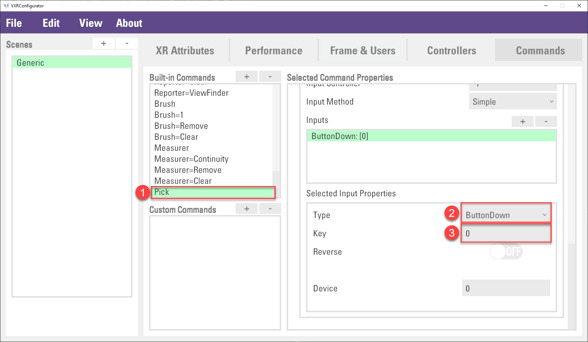

Interact with Virtual World
This chapter introduces the interaction features provided by VotanicXR. The VotanicXR Interaction is a high-level interaction system. It provides a framework that enables user to interact with virtual objects in the VR environment. The core of this system consists of a set of base Interactor and Interactable components, and an interaction manager that links interactor and interactable together. This chapter introduces how to set-up the interactable objects and interactors.
Interaction Tutorial Scene
The related materials and example scene are in Assets > Votanic > VotanicXR_Tutorial > Tutorial04_Interaction > Resources.
Interaction in VotanicXR
In VotanicXR, all interactions happen when an Interactor performs a type of interaction with an Interactable GameObject. When an interaction is triggered, a command or a Unity Event is invoked that can be used to perform different actions in the VotanicXR application.
The Interactor
There are three types of Interactor in VotanicXR: Wand, Vision, and Collider. The table below summarises the details of each Interactor:
| Interactor | Description | Available Interaction Type |
|---|---|---|
| Wand | The Wand is the most common interactor in VotanicXR. It resembles the user’s hand(s) in the VR world. By default, it is represented by a ray beam object or a glove in VotanicXR. |
Object command actions: Grab, Pick, Drop, Trigger, Ungrab Event triggers: Select, Select Stay, Deselect, Up, Down, Press, Hold |
| Vision | The Vision interactor makes use of the user’s line-of-sight to interact with the VR world. Interaction can be triggered when the user looks at an Interactable. |
Event triggers: Look, Look Repeat, Look Stay, Look Exit |
| Collider | The Collider interactor triggers an event when active collider of interactor game objects collides with another collider. |
Event triggers: Collider Enter, Collider Stay, Collider Exit |
The Interactable
A GameObject having both the V Gear_Interactable (Script) component and a collider component is available for interaction in VotanicXR. For all the interactable GameObject, VotanicXR has a few built-in basic interactions, as well as a number of event triggers available for building custom interactions.
To set up an interactable object, right click on the GameObject in in Hierarchy window and select vGear > Component > Interactables+. The V Gear_Interactable (Script) component will be added to the game object, exposing it for interaction with the interactor in VotanicXR. In case the game object does not already have a collider component, a box collider will be automatically added to the game object as well.
Basic Interaction
There are three types of pre-defined interaction actions that will interact with the Wand interactor. The interaction can be triggered when user’s Wand or Glove approach an interactable object. The colour of the Wand or Glove (outline) reveals the object’s availability for interaction:
White colour: the wand is enabled and waiting for interaction
Green colour: the wand is touching an interactable object and ready for interaction
Red colour: the wand is interacting with the interactable object
Grey colour: the wand is disabled
The pre-defined interaction actions are: Grab, Pick, and Climb. The table below briefly summarizes the effects of each action:
| Interaction Action | Description | Example |
|---|---|---|
| Grab | Grab action imitates the user grabbing an object. It requires holding the Grab button or sending the Grab command continuously.The interactable object will follow the movement of the Wand when user holds the Grab button or triggers the Grab command on a grabbable object. |
 |
| Pick | Pick action picks up an object and automatically carries it on the user’s hand. The interactable object will follow the movement of the user’s hand when picked up. The pick up and carry is initiated by pressing the Pick button or triggering the Pick command once on a pickable object; and pressing the Grab button or triggering the Grab command once to release the object. |
 |
| Climb | The climb action imitates the situation which the user is applying force to an extremely heavy object. The user transform will follow the transform of the interactable object when the climb action is enforced. If the user tries to move the wand while grabbing a climbable object, the user transform will move in opposite direction of the wand movement. The climb action is initiated by holding the Grab button or triggering the Grab command on a climbable object. |
 |
The interaction actions are pre-configurured to different key on various input devices to accommodate cross-platform compatibility. The default command input mappings are shown in the table below for your reference. Optionally, you can always customise the mappings for each application using the VotanicXR Configurator.
| Command | Keyboard / Mouse in PC Mode | Vive Controller | Other Supported Input Devices |
|---|---|---|---|
| Grab | Left Shift | Grab Button | Button[1] of the 1st and 2nd controller recognized by VotanicXR |
| Pick | No mapping by default |
No mapping by default |
No mapping by default |
| Climb | Left Shift | Grab Button | Button[1] of the 1st and 2nd controller recognized by VotanicXR |
These pre-defined interaction actions, as well as detailed behaviour, can be set by toggling the Climb Setting and Grab Setting parameters in the V Gear_Interactable (Script) component.
Note: due to the nature of the actions, climb and pick are mutually exclusive actions. When both the climb and the pick options are selected in the interactables settings, the pickable option will be automatically disabled in runtime.
The following section introduces how to configure the three types of basic interactions.
Grab Interaction
Right click on the GameObject
Interactable gameObjects > Chair. Then selectvGear > Component > Interactables+. A componentV Gear_Interactableswill be added to the GameObject.In
V Gear_Interactablescomponent, enable[Setting] > Grab Setting > GrabbablepropertyIn play mode, the GameObject
Chaircan be grabbed when user holds theGrabbutton.Optional. User would be able to throw the object if the
Grabbutton is released while the wand object is in motion.
Pick Interaction
The Pick command is not enabled by default in VotanicXR. To enable the Pick interaction, it is required to first configure the Pick command to an input method first.
In
Projectwindow, double click thesetting_Interaction.vxrsinAssets > VotanicXR > VotanicXR_Tutorial > Tutorial04_Interaction > Resourcesto open the VotanicXR Configurator. Then, select theCommandstab, and Click the+Button inBuild-in Commands.Select
PickinCommand Name, and then ClickCreatebutton.In the Built-in Commands list, select the
Pickcommand, then under theSelected Input Properties, selectButtonDowninTypeproperty and input0inKeyproperty.
Save the config, close the VotanicXR Configurator and go back to Unity.
Right click on the GameObject
Interactable gameObjects > Vase. Then selectvGear > Component > Interactables+. A componentV Gear_Interactableswill be added to the GameObject.In
V Gear_Interactablescomponent, enable[Setting] > Grab Setting > Pickableproperty.In play mode, the
VaseGameObject can be picked when user press thetriggerbutton. User can pressGrabbutton once to release the object.Optional. While the
Pickaction is in force, user can switch toGrabaction by pressing and holding theGrabbutton.
Climb Interaction
Right click the GameObject
Interactable gameObjects > Flying Shield. Then selectvGear > Component > Interactables+. A componentV Gear_Interactableswill be added to the GameObject.In
V Gear_Interactablescomponent, enable[Setting] > Climb Setting > Climb Objectproperty. Optionally, check theX,Y,Zproperty in[Setting] > Climb Settingto enable the relative movement of the user transform in the corresponding direction when grabbing the object.
In play mode, when user hold the
Grabbutton on theFlying ShieldGameObject, the user will follow the movement of theFlying Shield.
Advanced Interaction
In addition to the basic interactions, VotanicXR has altogether 17 Interactive event triggers for developers to extend the usage of their application. Besides, developers can register their own function to each event.
| Event Trigger | Interactor | Triggered by | Corresponding Command | Triggering Condition |
| Grab | Wand | Grab button | Grab | Holding the grab button or trigger grab command |
| Pick | Pick button | Pick | Pressing the picking button or trigger pick command once | |
| Drop | Grab button | Drop or Ungrab | Releasing the grab button. Both drop or ungrab command will trigger drop event. By default, drop command has not bind to any buttons. |
|
| Select | Wand tool | - | When the tip of the wand collides with the interactable object | |
| Select Stay | The tip of the wand continuously touches the collider of the interactable object. This event will be triggered once per frame | |||
| Deselect | When the tip of the wand exits the interactable object | |||
| Up | Trigger button | Trigger | The user releases the trigger button | |
| Down | The user presses down the trigger button | |||
| Press | The user presses and holds the trigger button. This event will be triggered once per frame | |||
| Hold | The user presses and holds the trigger button for a custom duration. This event will be triggered once with a custom duration | |||
| Look | Vision | User’s Head direction | - | The user looks at the interactable object |
| Look Repeat | The user looks at the interactable object continuously for a custom duration. This event will be triggered once with a custom duration | |||
| Look Stay | The user looks at the interactable object continuously. This event will be triggered once per frame | |||
| Look Exit | The user looks away from the interactable object | |||
| Collider Enter | Collider | Other GameObject collider | - | The interactable object enters and collides with other GameObject colliders |
| Collider Stay | The interactable object is touching the other GameObject’s collider. This event will be triggered once per frame | |||
| Collider Exit | The interactable object leaves other GameObject’s collider |
Set up Interaction using Unity Event
The below example is to illustrate adding Select and Deselect event trigger on a Rock GameObject and trigger a custom function.
Create a
RockInteractionscript and attach it to theInteractable Objects > RockGameObject.In the
RockInteractionscript, add two functions as below.public void OnWandSelectOnRock() { GetComponent<Renderer>().material.color = new Color(Random.value, Random.value, Random.value); } public void OnWandDeselectOnRock() { GetComponent<Renderer>().material.color = Color.white; }Add interactable+ on the
RockGameObject.In the
V Gear_Interactablescomponent, configure theInteraction TypetoSelectand add a Unity Event. In the event item, drag theRockGameObject to the event and selectOnWandSelectOnRockMultiple interactions can be defined in the
V Gear_Interactables. We add theDeselectevent in the[Additional Setting] > Interactionsand bind the event to theOnWandDeselectOnRockfunction.Finally, check the result in the play mode.

Set up Interaction using Custom Command
Instead of registering functions to the Interaction, the Interaction can send a custom command and receive that command via API vGear.Cmd.Received("Command").
The below example is to configure the GameObject Barrel to use the Select and Deselct Interactions. A custom command will be sent out and received by a GameObject SceneController.
Right click the
Interactable Objects > BarrelGameObject and add aInteractables+script.In
V Gear_Interactablescomponent, selectInteraction Type, and input the commands in theCommandproperty as follow.Create an empty GameObject
SceneControllerand a new scriptCommandController, then attach the script to theSceneController.Use API
vGear.Cmd.Received("OnWandSelectOnBarrel")andvGear.Cmd.Received("OnWandDeselectOnBarrel")to receive the command.void Update() { if (vGear.Cmd.Received("OnWandSelectOnBarrel")) { GameObject.Find("Barrel").GetComponent<Renderer>().material.color = new Color(Random.value, Random.value, Random.value); } if (vGear.Cmd.Received("OnWandDeselectOnBarrel")) { GameObject.Find("Barrel").GetComponent<Renderer>().material.color = Color.white; } }In the play mode, when press on the barrel, the color of the barrel will be updated per each command received.
Other Interaction Examples
Interaction with vision
The Vision Interaction can be used to trigger interactions between user's line-of-sight and interactable gameObjects. The relevant interaction types are Look, Look Repeat, Look Stay and Look Exit.
Right Click the
Interaction Object > Bird HouseGameObject and clickInteractable+component.Create a
BirdHouseInteractionscript and attach to theBird HouseGameObject.In the script, create a function as below.
public void DisableBirdHouse() { GetComponent<Renderer>().enabled = false; }In
Bird HouseGameObject, set the interaction in theV Gear_Interactables(Script)as below.Interaction Type: Look
Unity event: add an event and select the last created function
Play the scene and see the effect

Interaction with collider
The Collider Interactor can be used to trigger interactions between a game object with collider and other interactable gameObjects. The relevant interaction types are Collider Enter, Collider Stay and Collider Exit.
Right Click the
Interaction Object > AreaGameObject and clickInteractable+component.
Create a
AreaInteractionscript and attach to theAreaGameObject.In the script, create a function as below.
public void AreaChangeColor() { GetComponent<Renderer>().material.color = new Color(Random.value, Random.value, Random.value, .5f); } public void AreaRestoreColor() { GetComponent<Renderer>().material.color = Color.white; }In
AreaGameObject, set the interaction in theV Gear_Interactables(Script)as below.Interaction Type: Collider
Unity event: add an event and select the last created function
Play the scene and see the effect.

Optional. The
Collider Detectionproperty can be used to limit the interactor object that is able to interact with the interactable object. Below is an example collider detection option added to the Area interactable. We give 2 conditions on the interactor object: 1. the name of the GameObject equalsChairand in layer 30; OR 2. the GameObject is in layer 28. The interactor must fulfil either one of these conditions to interact with the Area interactable.